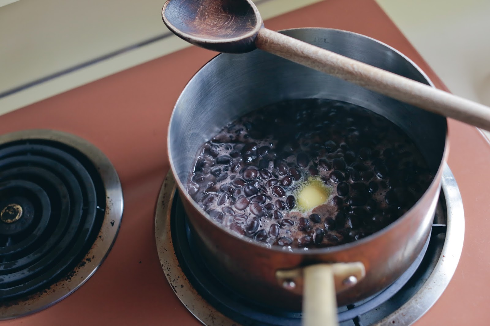
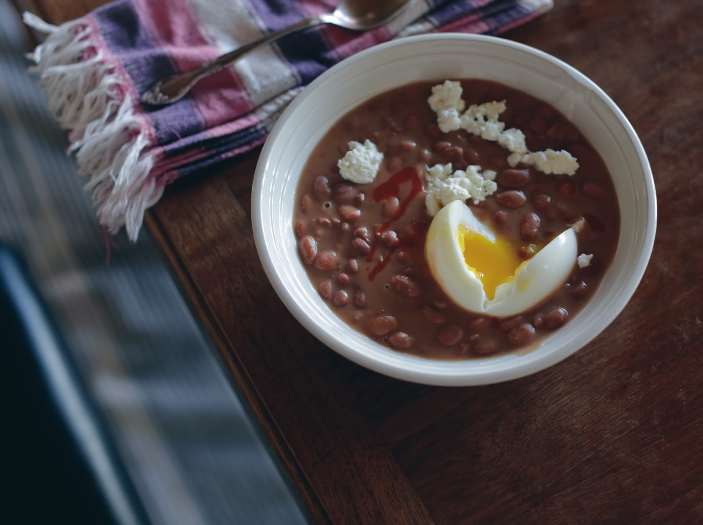

The bean doctor
I believe everyone should know how to doctor a can of beans. I also believe that, having said this, I have become my father. I also believe I would do anything, anything, absolutely anything to get R. Kelly’s “I Believe I Can Fly,” which lodged itself in my head as I was typing those first two sentences, back out of my head again. Spread my wings and fly awaaaaaaaaaay
I come from a family of bean doctors. The beans we ate most often were baked beans – Bush’s brand, I think – to which my dad added brown sugar and Worchestershire sauce. We ate them whenever my mom was out for the evening, usually with boiled hot dogs. It felt like a secret that only he and I were in on, and it was my favorite meal as a kid. It might still be, because you can’t improve on a combination like that. Burg could also be known to crack open a can of cannellini beans, rinse them, and dress them with pesto to make a quick salad. If he was feeling frisky, he would then plate his cannellini salad by carefully piling spoonfuls of it onto individual endive leaves, as though he were making canapés for a banquet. He could throw down.
I married a bean doctor. We always have canned chickpeas and black beans in the cabinet for Brandon’s chickpea salad with lemon and Parmesan or his quick black beans with cumin and oregano. One night last week, when he needed a late dinner after work, he drained and rinsed some chickpeas and tossed them with warmed leftover sauce from a batch of penne alla vodka. As for me, if I happen to have pinto beans around, I make Luisa’s, or rather Melissa Clark’s, fake baked beans. (The. Best.)
I know that some people look down their noses at canned beans: maybe they don’t taste or feel quite the same as perfectly cooked-from-dried beans, and they can be higher in salt, and then there’s the specter of BPA in the can lining. I do keep dried beans around, and I cook them often, and sometimes I do a good job of it. But there is nothing inherently wrong with a canned bean. Being told otherwise makes me tired. Canned (or jarred in glass, if you prefer) beans can be very good – especially brands like Progresso, Bush’s, or Goya – and it doesn’t take much effort, or much time, to make them great. VIVE LE BEAN DOCTOR.

My cousin Katie makes something called Creamy Beans, and she shared her method with me a few weeks ago, when I called to pick her brain about seven-minute eggs. You upend four cans of beans – black or pinto are best – and their liquid into a saucepan, add a chunk of butter, and shake a bottle of hot sauce over the pan for ten seconds. You stir it all up, and then you let it simmer gently until the liquid is thickened and the beans are starting to break down. Katie learned about Creamy Beans from a co-worker, and now she and her husband Andre usually make a batch once a week, have it with or for dinner, and then eat the leftovers in the mornings that follow, with seven-minute eggs on top.

I’ve made Creamy Beans twice since Katie told me about them, once with pinto beans and once with black beans. Pintos don’t break down much – it’s mostly about letting the liquid thicken and get creamy – but with a long simmer, they become wonderfully tender, even more than the average canned bean. Black beans break down more easily, though I stopped cooking mine before they really did; I let them cook just until they were fudgy, gooey. In any case, the butter gives them a quiet richness and heft, while the hot sauce brings acid to offset their natural earthiness. It’s sort of a cheater’s version of refried beans, sort of. June cheerfully ate bowlfuls of Creamy Beans on their own, while I topped mine with eggs and more hot sauce – and once, feta, though it didn’t totally jibe. Next time, I’ll slice avocado on top and grate some sharp cheddar.
Have a happy week, all.
Creamy Beans
Adapted from Katie Caradec
I’m no fan of the liquid in cans of beans – it’s just so… slimy – but this is a recipe where it really is useful. Take a deep breath, and dump it in.
As for butter, Katie doesn’t measure it, but she told me that she probably uses two tablespoons for four cans of beans. I prefer mine with more butter, ideally with a tablespoon per can. Brandon also suggests adding garlic, pressed or minced, and that’s very nice, too. It adds a faint depth of flavor. But I defer to you.
Also, note that this recipe can be scaled down as needed. When I made it with black beans last week, I only had one can in the house, and it worked just fine – and in less time.
Pour the beans and their liquid into a medium saucepan. Add the butter, maybe ten or fifteen shakes of hot sauce, and the garlic (if using; see above). Stir to mix. Place over medium-high heat, and bring just to a simmer. Adjust the heat to maintain a gentle simmer, and cook, stirring occasionally, until the liquid has thickened and looks creamy and the beans are very tender, maybe even falling apart. For pintos, I let mine go for about 1 hour, though Katie says hers only take about 30 minutes. You can cook it as long as you like, really. Cook it to your taste. (And keep in mind that the beans will thicken further, and get creamier, as they cool.)
Serve hot, with seven-minute eggs and any other toppings you like: hot sauce, avocado, cilantro, grated cheese, etc.
Yield: dinner for 2, plus 3 or 4 breakfasts, depending on how you serve it